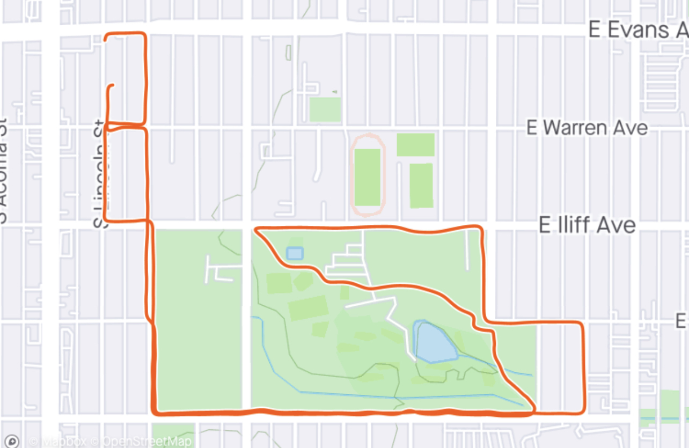

<div class="selected-run" *ngIf="run">
  <div class="selected-run__stats">
  <h2 class="selected-run__name">Run # {{run.id}} Details</h2>
    <p>Distance: {{run.distance}}</p>
    <p>Duration: {{run.duration}}</p>
    <p>Route: {{run.route}}</p>
  </div>
  <div class="selected-run__route">
    
  </div>
</div>